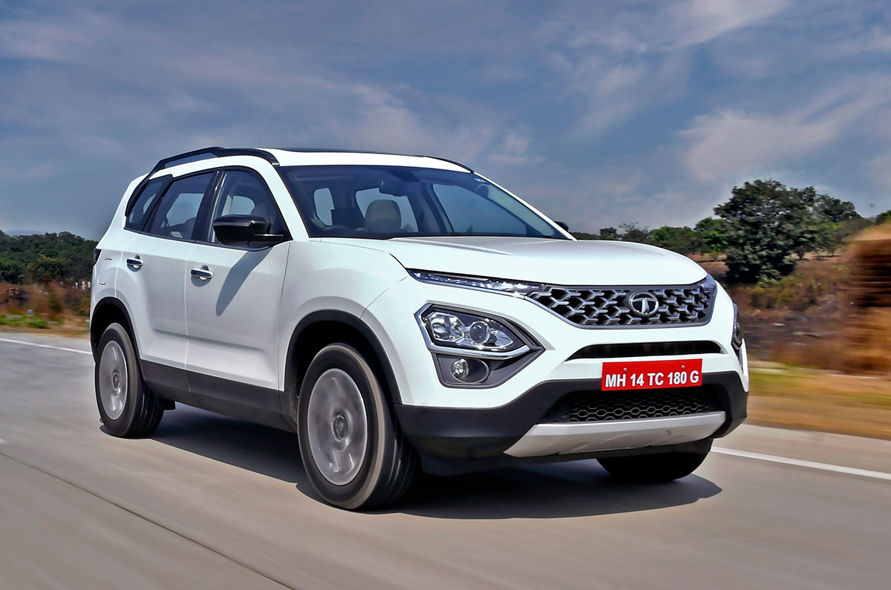

Tata Motors' principal subsidiaries include British premium car maker Jaguar Land Rover (the maker of Jaguar and Land Rover cars) and the South Korean commercial vehicle manufacturer Tata Daewoo. Tata Motors has a construction-equipment manufacturing joint venture with Hitachi (Tata Hitachi Construction Machinery), and a joint venture with Stellantis which manufactures automotive components and Fiat Chrysler and Tata branded vehicles. On 12 October 2021, private equity firm TPG invested $1 billion in Tata Motors' electric vehicle subsidiary.[8]
The Tata Safari is a mid-size SUV produced by the Indian automobile manufacturer Tata Motors since 1998. The first-generation Safari has been designed as a seven-seater SUV with a foldable third row, roomy interior; on the market it has positioned itself as an alternative from the competitive price to other brands off-road vehicles
h3> For more car option visit following links -